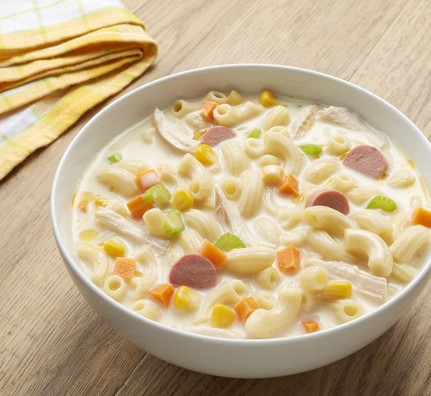

Sopas

Sopas is a beloved Filipino comfort food made with macaroni pasta, tender chicken, and a mix of vegetables like carrots, cabbage, and celery.
It's cooked in a rich, creamy broth of evaporated milk and chicken stock, and flavored with garlic, onions, and fish sauce.
This hearty and warm soup is perfect for cold days and is often enjoyed as a nourishing meal.
Ingredients
- 1 lb. chicken skin removed
- 2 ounces ham chopped
- 1/2 lb elbow macaroni
- 4 stalks celery minced
- 1 medium yellow onion minced
- 1 large carrot diced
- 1 ½ cups chopped cabbage optional
- 4 cups chicken broth
- 6 to 8 cups water
- 1 1/2 cup fresh milk or 1 14 oz. can evaporated milk
- 3 tablespoons butter
- Salt and pepper to taste
Steps
- Bring the water to a boil.
- Add the chicken. Boil the chicken in low to medium heat for 45 minutes or until tender.
- Remove the chicken and let cool. Set-aside the water used to boil the chicken. We'll use this later.
- Once the chicken reaches room temperature, shred the meat using your hands. Discard (throw away) the bones.
- Meanwhile, heat a clean large cooking pot.
- Pour-in the butter and oil. Once the butter and oil becomes hot, sauté the onion, carrot, and celery for 3 minutes.
- Add the shredded chicken and chopped ham. Cook for 2 minutes.
- Pour-in the chicken broth and the remaining water used to boil the chicken. Stir and let boil. Simmer for 20 minutes.
- Add the elbow macaroni. Cook for 15 minutes. Add more water if needed.
- Pour-in the milk. Stir and let boil.
- Add salt and pepper to adjust the taste.
- Transfer to a serving bowl. Serve.
- Share and enjoy!
Back to main menu